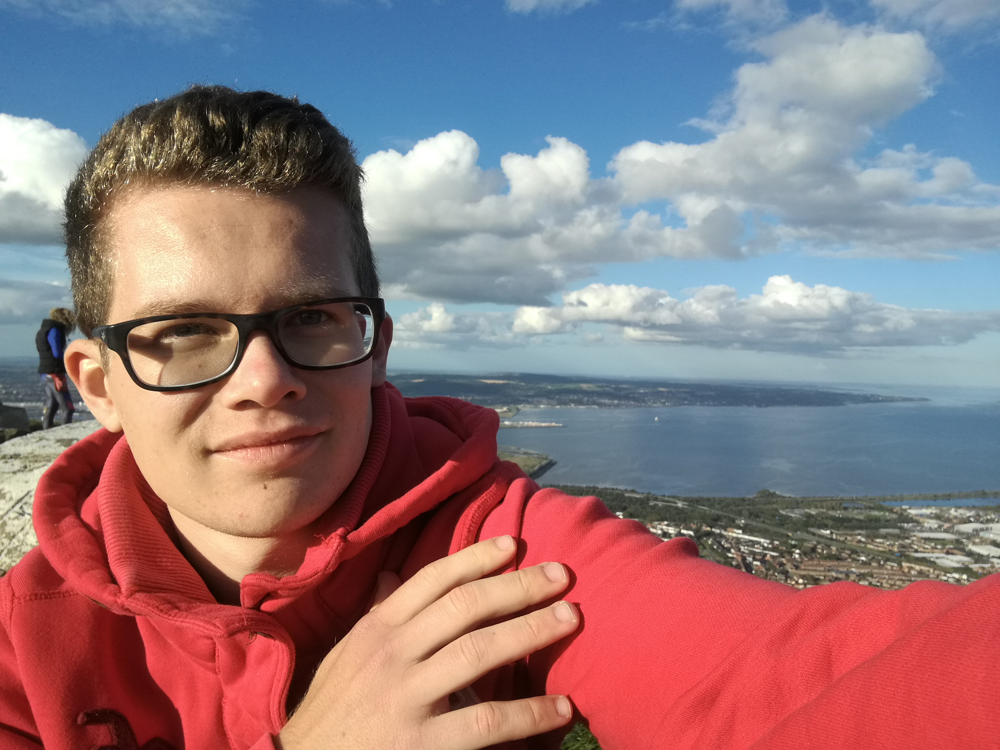

My blog
Because most of the site is probably not working, just read the stuff which is, I am still working here -.-
Just a little about myself...
So my name is Mattis Birkhahn and I study mathematical finance in Kosntanz. Originally I am from Lübeck, however I am currently on an Erasmus semester in Belfast, Northern Ireland. That is also the reason why I started this blog to keep the people the people up to date.
So klick on the topics on the left to see what wee craic is happening. And for those of you who forgot how I look, that is basically me!
